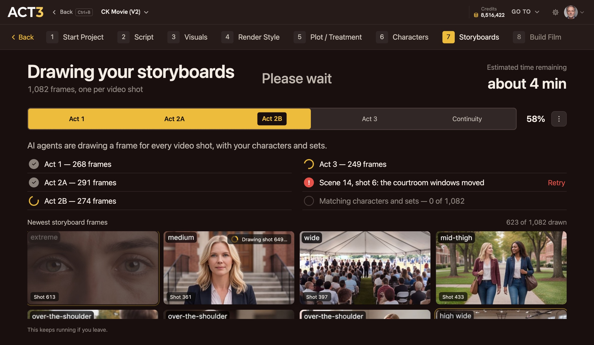

Step 2 of 6
Watch your storyboards get drawn
AI agents now draw one frame for every video shot, act by act. Watch the newest frames arrive on the wall. When the run finishes, click Continue.

Newest storyboard framesWhat this page is
"Drawing your storyboards" shows the work as it happens. The tabs across the middle are the acts of your film (Act 1, Act 2A, Act 2B, Act 3) and a last Continuity pass that matches characters and sets across frames. The yellow fill is how far the run has got.
Under the tabs, each row is a piece of the work: an act finished with its frame count, an act still drawing, or a problem to fix. The wall at the bottom shows the newest frames as they finish, each with its shot size and video shot number. When the wall is full, the oldest frame is replaced first.
What to focus on
- A red row means one frame failed (for example "the courtroom windows moved"). Click Retry on that row.
- The wall is your first look at your coverage. You are looking for variety: wides that set the geography, singles and close-ups for the emotion, inserts for the props that matter.
- You do not have to wait. The work keeps running if you leave. The page's menu can open the Storyboard as soon as Act 1 is ready, or go on to building your film now.
Where you go next
When every frame is drawn, a window says your storyboards are ready. Its Continue goes on to building your film, and from there to the Editor. The next step of this guide picks up in the Editor, the place you come back to again and again.